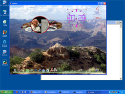
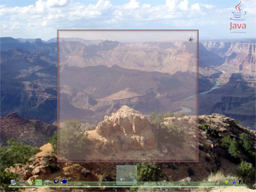
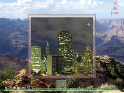
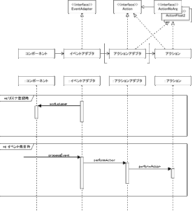
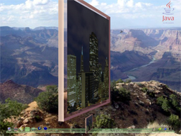
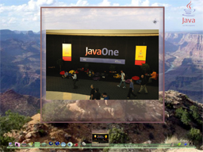

櫻庭 祐一 http://www.javainthebox.net/
みなさん、次世代の 3D デスクトップ Project Looking Glass はご存知でしょうか。
この解説記事が掲載されている JAVA PRESS が書店に並ぶときには、すでに San Francisco において JavaOne がおこなわれており、Projecct Looking Glass とその開発者である川原英哉氏の話題でもちきりだと思います。
今でこそ Java というとサーバ側の技術して定着していますが、Java はそれだけではないのです。J2SE 5.0 のテーマにも Client Desktop が掲げられているように、デスクトップでの Java の巻きかえしがはかられています。
その流れの筆頭が本解説で紹介する Project Looking Glass、通称 LG3D なのです。
今から約 30 年前、Xerox のパロアルト研究所 (PARC) で今のウィンドウシステムのベースとなる技術が生まれました。WIMP と呼ばれる Window - Icon - Menu - Pointer で構成された GUI はまさに画期的なものでした。
それから 30 年。今のウィンドウシステムは機能こそ増えましたが、基本的には 30 年前と変わりません。
でも、それでいいのでしょうか。
そこで、川原氏が考えたことは今までの 2D のウィンドウシステムに奥行きを与えることでした。 しかし、単にデスクトップを 3D にしたのではありません。
たとえば、LG3D には次のような機能があります。
これらの機能はすべて、ユーザビリティを高めるために盛り込まれた機能です。
つまり LG3D のテーマは
2D のデスクトップ + ユーザビリティのための 3D
であり、川原氏はこのことを
2.5D デスクトップシステム
と呼んでいます。
LG3D では 2.5D のデスクトップシステムを実現しているだけでなく、その上で動作するアプリケーションを開発するための API も提供しています。
そこで、本解説では LG3D のサンプルアプリケーションを作ることで、2.5D デスクトップシステムを少しでも感じていただければと思っています。
LG3D というと Linux で動作するというイメージがあるかもしれませんが、本解説では Windows を使用します。LG3D の基本的な部分はほぼ Java で作られており、プラットフォームに依存せずに動作させることが可能です。
ただし、X Window システムと協調する部分はネイティブコードで書かれているため、Windows では次のような制約があります。
しかし、LG3D API を使用した 2.5D や 3D のアプリケーションを動作させるには何の問題もありません。逆に Windows で作成することの利点もあります。たとえば、
などがあります。
LG3D は 3D の描画に OpenGL を使用しています。Linux で LG3D を動作させるには OpenGL への対応の問題もあり、現状 NVIDIA のビデオカードを選択せざるをえません。ところが、Windows ではチップセットに統合されているビデオ機能であっても問題なく LG3D を動かすことができるのです。
LG3D をインストールする前に、次の 3 つのコンポーネントをインストールしておきましょう。
JDK 5.0 は原稿執筆時点での最新バージョンは 5.0 Update 3 です。JDK をインストールした後には JAVA_HOME 環境変数を JDK をインストールしたディレクトリに設定しておいてください。
JAI にはいくつかのパッケージがあるのですが、その中の JDK Install を使用してください。この場合、ダウンロードするファイル名は jai-1_1_2_01-lib-windows-i586-jdk.exe です。
Java3D 1.3.2 は ZIP ファイルで提供されています。ファイル名は java3d-1_3_2-windows0i586.zip です。展開すると j3d-132-win.zip というファイルがあるので、それを J2SE をインストールしたディレクトリの下の jre ディレクトリに展開します。
LG3D のインストールは非常に簡単です。
LG3D のダウンロードは https://lg3d-core.dev.java.net/binary-builds.html からおこないます。原稿執筆時点の最新バージョンは 0.62 で、ダウンロードするファイルは lg3d-fcs-rel-0-6-2-linux-i586-0504141534.tar.gz です。
ダウンロードしたファイルをインストールするディレクトリに展開します。展開にはUNIX で使われる tar + gzip に対応している展開ツールをご使用ください。
展開すると、lg3d というディレクトリが作成されます。これで、インストールは終了です。さっそく、起動させてみましょう。
lg3d 直下に bin ディレクトリがあり、その中に 3 つのバッチファイルがあります。Windows で起動するには、このバッチファイルの中の lg3d-dev.bat を使用します。
たとえば、C:\lg3d にパッケージを展開した場合、次のようになります。
C:\lg3d>cd bin C:\lg3d\bin>lg3d-dev
すると、画面中央にスプラッシュ画面が表示されたあと、LG3D のウィンドウが表示されます。もし、起動しない場合にはカレントディレクトリにある lgserver.log を見てみてください。
|  |
| 図 1 Windows で起動した LG3D |
|---|
LG3D が無事に起動したら、いろいろ試してみてください。
ウィンドウの下部にあるのがタスクバーです。左側に並ぶアイコンがアプリケーション起動のためのアイコン、右側が背景変更のためのアイコンです。一番右側のどくろマークのアイコンは LG3D を終了させるためのアイコンです。
左側に並んでいるアプリケーションのアイコンは主に lg3d-incubator プロジェクト (https://lg3d-incubator.dev.java.net) で開発されているものです。lg3d-incubator ではこれ以外にもさまざまなサンプルアプリケーションが開発されています。
基本的な操作方法に関して表 1 にまとめました。
| 表 1 基本的な操作 | ||||||||||||||||||||
|---|---|---|---|---|---|---|---|---|---|---|---|---|---|---|---|---|---|---|---|---|
|
前述したように Windows では、ウィンドウシステムを LG3D に置きかえることはできません。しかし、表示用の設定ファイル lg3d\etc\lg3d\displayconfig\j3d1x1 を変更することでフルスクリーンにすることができます。
デフォルトでは j3d1x1 ファイルの24, 25 行目は以下のようになっています。
//(ScreenAttribute center WindowSize NoBorderFullScreen) (ScreenAttribute center WindowSize (800 600))
フルスクリーンにするには、24 行目のコメントをはずし、25 行目をコメントアウトします。
(ScreenAttribute center WindowSize NoBorderFullScreen) //(ScreenAttribute center WindowSize (800 600))
これで、フルスクリーンモードで起動させることができます。
本解説で使用する LG3D のバージョンは 0.62 ですが、JavaOne において 0.70 が発表される予定になっています。0.70 ではパフォーマンス向上などが主な変更点となっており、API の変更は最小限に抑えられる予定です。
したがって、0.62 で作成したアプリケーションはそのまま 0.70 でも動作するはずです。バージョンの違いによる相違などについては、技術評論社の Web サイト (http://www.gihyo.co.jp/magazines/javapress/support/Vol43) でフォローするようにしますのでご参照ください。
また、作成したサンプルもここからダウンロードできるようにしてあります。
まずはじめにフレームに直接コンポーネントを 1 つ追加するサンプルを作ってみましょう。ソースはリスト 1 に表示しました。
LG3D でも AWT/Swng と同様にフレームを作成して、そこにコンポーネントを追加していきます。
LG3D のフレームには org.jdesktop.lg3d.wg.Frame3D クラスを使用します。同様に、コンポーネントは org.jdesktop.lg3d.wg.Component3D クラスです。
ここまでは AWT/Swing と同じですが、LG3D のコンポーネントは描画されないという違いがあります。描画されるのはコンポーネントに追加されるシェイプです。
シェイプは自分で作ることもできますが、すぐに使えるシェイプが org.jdesktop.utils.shape パッケージにまとめて提供されています。
このパッケージで提供されいているシェイプは大別すると 2 種類に分けられます。一方が立方体、円柱など 3D のモデルを作るためのベースになるプリミティブと呼ばれるもの、もう一方がパネルと呼ばれるものです。2.5D アプリケーションを作るにはこのパネルが大活躍します。
ここでは、パネルの中から GlassyPanel クラスを選んでみました。
3D での描画では色以外にも光の反射など物体の質感を表すことが重要になります。このような質感も含めたものをアピアランスと呼びます。
つまり、物体を描画するには形状とアピアランスが必要になるということです。前述したプリミティブやパネルは形状だけを表しています。
LG3D ではアピアランスを表すのに org.jdesktop.lg3d.sg.Appearance クラスを使用します。直接 Appearance クラスを使用してもいいのですが、簡単に扱うための org.jdesktop.lg3d.utils.shape.SimpleAppearance クラスが提供されているので、そちらを使ってみました。
SimpleAppearance クラスのコンストラクタは色の RGB の値、アルファ、そしてアピアランスのタイプを指定します。RGB とアルファは 0 から 1 までの float です。
Monolith1 では 14 行目で SimpleAppearance オブジェクトを生成しています。色が 1.0, 0.6, 0.6 なので薄いピンク、アルファは 1.0 つまり不透明になります。最後の DISABLE_CULLING は見えない部分でも処理をするということを意味しています。
| リスト 1 Monolith1 クラス |
|---|
01: import javax.vecmath.Vector3f;
02:
03: import org.jdesktop.lg3d.sg.Appearance;
04: import org.jdesktop.lg3d.utils.shape.GlassyPanel;
05: import org.jdesktop.lg3d.utils.shape.SimpleAppearance;
06: import org.jdesktop.lg3d.wg.Component3D;
07: import org.jdesktop.lg3d.wg.Frame3D;
08:
09: public class Monolith1 {
10: public Monolith1() {
11: Frame3D frame = new Frame3D();
12:
13: // Appearance の設定
14: Appearance appearance = new SimpleAppearance(1.0f, 0.6f, 0.6f, 1.0f,
15: SimpleAppearance.DISABLE_CULLING);
16:
17: // パネルの生成
18: GlassyPanel panel = new GlassyPanel(0.2f, 0.2f, 0.01f, 0.001f,
19: appearance);
20:
21: // パネルをコンポーネントに追加
22: Component3D component = new Component3D();
23: component.addChild(panel);
24:
25: frame.addChild(component);
26:
27: // フレームの大きさを設定
28: frame.setPreferredSize(new Vector3f(0.2f, 0.2f, 0.01f));
29:
30: // フレームの表示
31: frame.changeEnabled(true);
32: frame.changeVisible(true);
33: }
34:
35: public static void main(String[] args) {
36: new Monolith1();
37: }
38: } |
GlassyPanel クラスのコンストラクタの引数は幅、高さ、奥行き、ぼかす部分の幅、そしてアピアランスです (18 行目)。これ以外にもコンストラクタはオーバーロードされているので、使いやすいものを選んでください。
LG3D で扱う単位は m (メートル) です。したがって、ここで使用しているサイズ (0.2, 0.2, 0.01) は 20cm, 20cm, 1cm になります。
パネルができたので、それをコンポーネントに追加します (23 行目)。AWT/Swing ではコンポーネントの追加は add メソッドが使われますが、LG3D では addChild メソッドです。
同じく、コンポーネントをコンテナ (この場合はフレーム) に追加するのにも addChild メソッドが使用されます (25 行目)。同じメソッド名ですが、混同しないようにしてください。
次に 28 行目で、フレームの大きさを設定します。
フレームの大きさを設定するには Swing と同じように Component3D#setPreferredSize メソッドを使います。setPreferredSize メソッドの引数は Java3D で 3D のベクトルを表す Vector3f クラスになります。クラス名の最後の f は float であることを意味しています。
最後に、フレームを表示します。フレームの表示には changeEnable メソッド (31 行目) とchangeVisible メソッド (32 行目) を使用します。
できあがったサンプルをさっそくコンパイルしてみましょう。
ここでは LG3D を c:\lg3d にインストールし、サンプルもそこにあると仮定します。以後のサンプルでもすべてこの配置として記述してあります。
コンパイルには LG3D の JAR ファイル lg3d-core.jar が必要です。この JAR ファイルは C:\lg3d\lib\ext ディレクトリにあります。
C:\lg3d>javac -cp lib\ext\lg3d-core.jar Monolith1.java
コンパイルができたら、動かしてみましょう。
パッケージ化して LG3D にデプロイメントすることも可能ですが、ここでは手軽に動かすためのバッチファイルを用意しました。
このバッチファイルは LG3D チュートリアル (https://lg3d-core.dev.java.net/tutorial/) で使用されているシェルスクリプトをバッチファイルに変更したものです (リスト 2)。使用にあたっては、2 行目の LG3DHOME をお使いの環境にあわせて変更してください。
注) Rel-0.7.0 から LG3D チュートリアルでは runtutorial は使用されていません
| リスト 2 runtutorial.bat |
|---|
@echo off set LG3DHOME=. <--- ここを使っている環境にあわせて変更する if "%LGX11HOME%" == "" set LGX11HOME=%LG3DHOME%\ext\lg3d-x11 set CLASSPATH=%CLASSPATH%;. set CLASSPATH=%CLASSPATH%;%LG3DHOME%\lib\ext\lg3d-core.jar set CLASSPATH=%CLASSPATH%;%LG3DHOME%\ext\escher-0.2.2.lg.jar set CLASSPATH=%CLASSPATH%;%LG3DHOME%\ext\jaimlib.jar set CLASSPATH=%CLASSPATH%;%LG3DHOME%\ext\nwn-0.7.jar set CLASSPATH=%CLASSPATH%;%LG3DHOME%\ext\odejava.jar set CLASSPATH=%CLASSPATH%;%LG3DHOME%\ext\satin-v2.3.jar set CONFIG=lgconfig_1p_nox.xml set LGCONFIG=file:%LG3DHOME%\etc\lg3d\%CONFIG% set DISP_CONFIG=-Dlg.displayconfigurl=file:%LG3DHOME%/etc/lg3d/displayconfig/j3d1x1 java -Xmx512m -cp %CLASSPATH% -Dj3d.sortShape3DBounds="true" -Dlg.configurl=%LGCONFIG% %DISP_CONFIG% -Dlg.etcdir=%LG3DHOME%\etc\ %1 |
さて、実行してみましょう。
C:\lg3d>runtutorial Monolith1
画面の中央にピンクのパネルが表示されましたか?
このサンプル、たかだか40 行程度ですが、立派な LG3D のアプリケーションです。次からは、これをベースに拡張を加えていきたいと思います。
|  |
| 図 2 Monolith1 |
|---|
LG3D ではイメージを扱うことがとても多くあります。というのも、LG3D の動作原理がイメージと密接に関わっているからです。
たとえば、X Window のネイティブアプリケーションを動作させることを考えてみます。
X Window で動作しているアプリケーションは当然のごとく 2D です。それを 3D 空間に持ってくるために、アプリケーションの画面を一度イメージにしてしまいます。
つまり、アプリケーションの画面をキャプチャし、キャプチャしたイメージを LG3D でパネルの表面に貼るということを繰りかえしています。
したがって、必然的に LG3D ではイメージを扱うことが多くなるわけです。3D CG ではこのように 3D のモデルの表面に貼るイメージのことをテクスチャと呼びます。
それでは、さきほどのサンプル Monolith1 にテクスチャを貼ってみましょう。
GlassyPanel オブジェクトに直接テクスチャを貼ってもいいのですが、それだとせっかくの半透明のガラスの感じがなくなってしまうので、GlassyPanel とは別にもう 1 つパネルを追加しましょう。
イメージを表示するパネルとして FuzzyEdgePanel クラスを選んでみました。FuzzyEdgePanel クラスでは周りの部分をぼかすことができます。0 にしてもよいのですが、移動したときなどパネルが傾いたときにギザギザ (ジャギー) が出てしまうので、ここでは 0.001 にしてみました。
テクスチャの設定部分をリスト 3 に示しました。
先ほどとはちがって、アピアランスにテクスチャを設定できるように SimpleAppearance クラスのコンストラクタの第 4 引数に ENABLE_TEXTURE を追加しています (5 行目)。
テクスチャを作成するには、ユーティリティクラスの org.jdesktop.lg3d.sg.util.image.TextureLoader クラスを使用しました。このクラスはイメージファイルを指定すると、テクスチャを作成してくれます。
TextureLoader クラスのコンストラクタの第 2 引数は Component オブジェクトを指定しますが (Component3D オブジェクトではありません)、9 行目でおこなっているように null でかまいません。
テクスチャは getTexture メソッドで取得できます (10 行目)。テクスチャは org.jdesktop.lg3d.sg.Texture クラスで表されます。
そして、11 行目で Appearance#setTexture メソッドを使用してテクスチャをアピアランスに設定します。
FuzzyEdgePanel クラスのコンストラクタの引数は幅と高さ、ぼかす幅、アピアランスです。16 行目に示したように、アピアランスにはテクスチャを設定した imageAppearance を使用します。
後は Monolith1 と同様にコンポーネントに追加するだけです (20、21 行目)。
basePanel が Monolith1 と同様に GlassyPanel オブジェクト、imagePanel が今作成したテクスチャを貼ったパネルです。
実行する前にイメージファイルを用意してください。ファイル名は 9 行目に書かれているように texture.jpg です。
Monolith2 を実行した結果が図 3 です。GlassyPanel の上に FuzzyEdgePanel が表示されていることがお分かりだと思います。
| リスト 3 テクスチャを貼る (Monolith2.java より抜粋) |
|---|
01: // イメージパネル用のアピアランス
02: Appearance imageAppearance
03: = new SimpleAppearance(1.0f, 1.0f, 1.0f, 1.0f,
04: SimpleAppearance.ENABLE_TEXTURE
05: | SimpleAppearance.DISABLE_CULLING);
06:
07: // テクスチャの設定
08: TextureLoader loader
09: = new TextureLoader("texture.jpg", null);
10: Texture texture = loader.getTexture();
11: imageAppearance.setTexture(texture);
12:
13: // イメージ用のパネルの設定
14: FuzzyEdgePanel imagePanel
15: = new FuzzyEdgePanel(0.18f, 0.18f, 0.001f,
16: imageAppearance);
17:
18: // パネルをコンポーネントに追加
19: Component3D component = new Component3D();
20: component.addChild(basePanel);
21: component.addChild(imagePanel); |
|  |
| 図 3 テクスチャを貼る |
|---|
次はイベント処理です。
LG3D で扱えるイベントはまだ十分とはいえません。たとえば、マウスは扱えますが、キー入力はまだ限定的にしか使えません。今後、バージョンが進むにつれてイベントも拡充される予定です。
そこで今回は、マウスでクリックされたらパネルを回転させるということをやってみましょう。
AWT/Swing ではイベント処理にはリスナが使用されますが、LG3D ではイベントアダプタとアクションの 2 つでイベント処理をおこないます。
LG3D のイベントに関連するクラスとシーケンスを図 4 にまとめてみました。
コンポーネントにリスナとして登録するのがイベントアダプタです。イベントアダプタは AWT/Swing のリスナのようにマウスイベントやキーボードイベントという単位ではなく、マウスのクリックのイベントとかマウスのホイールのイベントなどのように細分化されています。
表 2 に主なイベントアダプタを示しました。
イベントアダプタにはイベントを処理するアクションを登録します。
自分でアクションを記述することも可能ですが、サイズを変化させるなどのアクションが標準で提供されています (org.jdesktop.lg3d.action パッケージ)。表 3 に主なアクションをまとめました。
表の中で XXBoolean/Float とあるものは、XXBoolean がイベント後の値を指定しておきイベントが発生したらその値にするアクションで、XXFloat がイベントのプロパティ (マウスの位置など) に応じて変更量が変化するアクションになります。
イベントが発生するとイベントアダプタの processEvent メソッドがコールされます。するとイベントアダプタは登録されているアクションの performAction メソッドをコールします。
| 表 2 主なイベントアダプタ | ||||||||||||||||||
|---|---|---|---|---|---|---|---|---|---|---|---|---|---|---|---|---|---|---|
|
アクションはイベント処理に特化しており、イベントの種類には依存しません。そのため、performAction の引数は処理により、引数なしであったり、boolean であったりします。そのために、Action インタフェースの派生インタフェースが定義されており、引数なしであれば ActionNoArg インタフェース、boolean であれば ActionBoolean インタフェースなどを使用します。
イベントアダプタがアクションをコールする場合は、イベントが持つ情報を抽出して performAction の引数にしますが、引数が合わない場合があります。
こういう場合には、アクションの種類を変更するアクションアダプタを使用します。アクションアダプタはrg.jdesktop.lg3d.utils.actionadapter パッケージで定義されています。今回は ActionNoArg インタフェースから ActionBoolean インタフェースに変更する ToogleAdapter クラスを使用しました。
| 表 3 主なアクション | ||||||||||||
|---|---|---|---|---|---|---|---|---|---|---|---|---|
|
|  |
| 図 4 LG3D のイベント |
|---|
リスト 4 にイベント処理の部分だけ抜きだしてみました。
リスト中の component が Component3D オブジェクトです。
2 行目の Component3D#setAnimation をコールすることで、アニメーションがスムースに行われるようになります。 一種のお約束だと思ってください。
次の 4 行目からがイベントリスナの登録とアクションの登録をおこなっている部分です。
今回はマウスがクリックされたときに回転をさせるので、イベントアダプタに MouseClickedEventAdapter クラス、アクションに RotateActionBoolean クラスを使用します。
RotationActionBoolean クラスはActionBoolean インタフェースをインプリメントしていますが、MouseClickedEventAdapter クラスのコンストラクタにはActionBoolean インタフェースを引数にとるものがありません。そこで、ToggleAdapter クラスを使用して、ActionNoArg インタフェースから ActionBoolean インタフェースに情報の変換をおこないます。
ToggleAdapter オブジェクトは EventAdapter オブジェクトからコールされると、引数を true と false を交互にして ActionBoolean オブジェクトの performAction メソッドをコールします。
RotateActionBoolean クラスのコンストラクタの引数は、回転させるコンポーネント、回転角 (ラジアン)、回転の開始から終了までの時間 (ミリ秒) です。つまり、7 行目では component を 1 秒間かけて、360 度回転させます。
最後に Component3D#setMouseEventPropagatable メソッドをコールします。
デフォルトではイベントは子供のコンポーネントで処理されると、親のコンポーネントには伝達されません。そのため、ここでイベントを処理してしまうと、親のイベント処理までイベントが伝達されなくなり、ドラッグしてフレームを移動することなどができなくなってしまいます。そこで、setMouseEventPropagatable(true) をコールして、親のコンポーネントにイベントを伝達するようにします。
ソースをコンパイルして、ぜひ実行してみてください (図 5)。誌面ではその動きをお伝えすることはできませんが、いとも簡単にくるくる回るパネルが実現できているはずです。
| リスト 4 イベント処理 (Monolith3.java より抜粋) |
|---|
01: private void initEventAdapter() {
02: component.setAnimation(new NaturalMotionAnimation(1000));
03:
04: component.addListener(
05: new MouseClickedEventAdapter(
06: new ToggleAdapter(
07: new RotateActionBoolean(component, (float)Math.PI * 2.0f, 1000))));
08:
09: component.setMouseEventPropagatable(true);
10: } |
|  |
| 図 5 イベント処理をおこなうことで回転するパネル |
|---|
ここまでは 1 枚のイメージだけを表示していましたが、複数枚を表示できるようにしてみましょう。また、表示するときにはイメージにあわせて縦横比を変化させてみます。
マウスのクリックで回転しますが、そのときにイメージの切りかえをおこなうようにしてみましょう。くるくる回っている間にいつのまにかイメージが変化しているというわけです。
ソースをリスト 5 に示しました。
今までのソースとの変更点としては
LG3D ではタスクバーの中央に起動中のアプリケーションのサムネイルが表示されます。デフォルトだとただのパネルだけになっていまうので、70 行目から 75 行目で、サムネイルをタスクバーに登録しています。
複数のイメージファイルをロードするためには、イメージファイルの一覧を記述したファイル images.txt を使用しています。 最終的に JAR にするので、ClassLoader#getResourceAsStream メソッドを使用してストリームを取りだしています (88 行目)。
イメージのロードには TextureLoader クラスを使用せずに、Image I/O を使用しました。これは images.txt と同様に ClassLoader#getResourceAsStream メソッドを使用するためです (100 行目)。
また、Texture オブジェクトからは元のイメージの幅と高さを取得することができないので、元のサイズを保持するために TextureInfo クラスを作成しました。
このサンプルはイメージの切りかえ、すなわちテクスチャの貼りかえが必要です。テクスチャを貼りかえるには、129 行目に示したようにアピアランスに setCapability メソッドを使用して ALLOW_TEXTURE_WRITE を設定しておきます。
さて、リスト 5 の中でグレーで示されている部分がイメージの切りかえをおこなっている部分です。
先ほどまでとは違って、イベント処理は標準で提供されているアクションを使わないので、ActionNoArg インタフェースをインプリメントしたクラスを作成します。ActionNoArg インタフェースは performAction(LgEventSource source) メソッドを実装するだけです。ここでは actionPerfomed メソッドをコールしています (149 から 155 行目)。
actionPerformed メソッドでは 1 つだけ工夫をしました。
クリックした時にテクスチャを切りかえると、回りはじめるときにはすでにテクスチャが切りかわってしまうので、若干切りかえを遅延させるようにさせてみました。
遅延処理は別スレッドで処理させるため、Runnable インタフェースをインプリメントさせた無名クラスを作成しました (172 から 176 行目)。この Runnable オブジェクトを ScheduledExecutorService オブジェクトに処理させます。
ScheduledExecutorService インタフェースは J2SE 5.0 で導入された Concurrency Utilities に含まれるクラスです。これを使用すると、処理の遅延や繰り返し処理が簡単にできます。
ScheduledExecutorService オブジェクトは Executors クラスの newScheduledThreadPool メソッドを使用して取得します (56 行目)。
遅延処理をおこなうには schedule メソッドを使用します (177 行目)。第 2 引数が遅延量、第 3 引数が第 2 引数の時間の単位を示します。TimeUnit クラスは時間の単位を表すクラスで、秒、ミリ秒などが定数として定義されています。
実際にテクスチャの切りかえをおこなっているのが changeTexture メソッドです。
TextureInfo オブジェクトを取りだし (187 行目)、その大きさに応じてパネルとサムネイルの大きさを変更します (188 行目から 191 行目)。
そして、193 行目と 194 行目でパネルから getAppearance メソッドを使用してアピアランスを取りだし、テクスチャをセットします。
これで完成です。
さっそくコンパイルです。クラスが 2 つになったので、クラスパスにカレントディレクトリを含むようにしてください。
C:\lg3d>javac -cp lib\ext\lg3d-core.jar;. MonolithViewer.java
実行する前に images.txt とロードするイメージファイルを用意してください。
images.txt にはロードするファイルを 1行に 1 ファイルずつ記述します。
実行すると、先ほどと見た目は変わりませんが、クリックするとイメージが切りかわるのがお分かりだと思います。単にイメージを変更するのではなく、このような演出をつけくわえるだけで、まったく違ったアプリケーションに見えてくるから不思議なものです。
ぜひ、皆さんも試してみてその効果を実感してみてください。
| リスト 5 MonolithViewer クラス | |||||||||
|---|---|---|---|---|---|---|---|---|---|
|
| リスト 6 TextureInfo クラス |
|---|
import org.jdesktop.lg3d.sg.Texture;
public class TextureInfo {
private Texture texture;
private float widthRatio;
private float heightRatio;
TextureInfo(Texture texture, int width, int height) {
this.texture = texture;
if (width > height) {
widthRatio = 1.0f;
heightRatio = (float)height / width;
} else {
widthRatio = (float)width / height;
heightRatio = 1.0f;
}
}
public Texture getTexture() {
return texture;
}
public float getWidthRatio() {
return widthRatio;
}
public float getHeightRatio() {
return heightRatio;
}
} |
せっかくここまで作ってきたのですから、タスクバーから起動できるようにしましょう。
そのためにはアイコンと設定ファイルが必要です。アイコンは図 6、設定ファイルはリスト 7 に示しました。
次にクラスファイルとアイコンを JAR にまとめます。
C:\lg3d>jar cvf monolith.jar MonolithViewer*.class TextureInfo.class monolith.png
できあがった monolith.jar を C:\lg3d\ext にコピーし、monolith.lgcfg は C:\lg3d\etc\lg3d にコピーします。
lg3d-dev.bat では CLASSPATH が必要最低限に設定されているので、このままだと images.txt がロードできません。そこで少しだけ変更しましょう。CLASSPATH を設定しているのは setup.bat です。
setup.bat の中で以下に示す行があります。
set CLASSPATH=%lgdirjava%/lib/ext/lg3d-core.jar;%lgdirjava%/lib/ext/lg3d-incubator.jar
この行を次のように変更します。
set CLASSPATH=%lgdirjava%;%lgdirjava%/lib/ext/lg3d-core.jar;%lgdirjava%/lib/ext/lg3d-incubator.jar
images.txt は C:\lg3d においてください。
さっそく、lg3d-dev.bat で LG3D を起動してみましょう。アイコンをクリックすれば MonolithViewer が起動するはずです。実行例を図 7 に示しました。
| 図 6 アイコンイメージ monolith.png |
|---|
| リスト 7 設定ファイル monolithviewer.lgcfg |
|---|
<?xml version="1.0" encoding="UTF-8"?> <java version="1.5.0" class="java.beans.XMLDecoder"> <object class="org.jdesktop.lg3d.scenemanager.config.ApplicationDescription"> <void property="exec"> <string>java MonolithViewer</string> </void> <void property="iconFilename"> <string>monolith.png</string> </void> <void property="name"> <string>Monolith Viewer</string> </void> </object> </java> |
|  |
| 図 7 MonolithViewer |
|---|
かなりかけあしになってしまいましたが、LG3D のプログラミングを一巡りしました。
あまり 3D を意識しなくても、アプリケーションが作れることを感じていただけたでしょうか。
既存の 2D のアプリケーションから、2D のアプリケーションに 3D の使いやすさを加えた 2.5D のアプリケーション、そして革新的な 3D のアプリケーションまで LG3D では幅広く対応をしています。後は、これを読んでいるみなさんのイマジネーションがものをいうのです。
とはいうものの、LG3D はまだ開発がはじまったばかりです。まだまだ足りない機能も多くありますし、使い勝手が悪い部分もあります。Windows の場合だと、ネイティブアプリケーションを 3D 空間内に表示できないという制限もあります。
使ってみてなにか感じるものがあったときこそ、ぜひ LG3D のコミュニティにフィードバックしてください。それが、次の開発のきっかけになるかもしれません。
LG3D のメーリングリストは interest@lg3d.dev.java.net で、登録ページは https://lg3d.dev.java.net/servlets/ProjectMailingListList です。日本語のメーリングリスト interest_ja@lg3d.dev.java.net もあります。登録ページは英語のメーリングリストと同じです。
みなさんのフィードバックが明日の Project Looking Glass を作るのです。
最後になりましたが、本解説を執筆するにあたりさまざまな助言やコメントをいただきました川原英哉氏、神谷結花氏、えんどうやすゆき氏、おだはらだい氏に感謝いたします。
Welcome to the Wonderland of the Project Looking Glass
http://www.javainthebox.net/lg3d/index.html
ソースはすべて Windows で使用することを前提としているため、文字コードは Shift_JIS、改行コードは CR LF になっています。
すべてのソースおよびサンプルのイメージ。lg3d ディレクトリで展開することによりすぐに使用することができます。
$Revision: 1.1 $ $Date: 2006-05-09 18:16:20 $
{kind=link}
{kind=link}
{kind=link}
{kind=link}
{kind=link}
{kind=link}